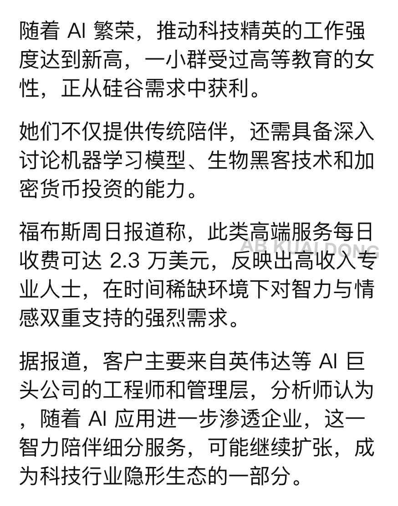

🍄NNNullptr
@NNNullptr
@_FORAB 哦哦哦哦还有这种压抑的

AB Kuai.Dong
@_FORAB
硅谷目前正逐渐流行，一种新的异性伴侣服务，每天收费高达 2.3 万美金。
与常规付费女伴侣不同，她们普遍受过高等教育，能深入跟你讨论 AI、半导体、美股等话题，通常智商在线。
而主要客户也都是硅谷的 AI 科技精英，如英伟达工程师，他们因长时间加班，渴望这种同认知水平异性社交。 https://t.co/ezI46i0AMn